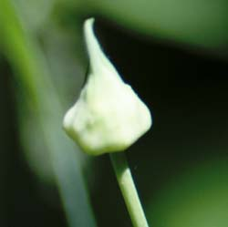
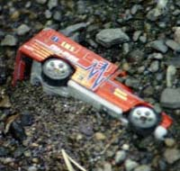
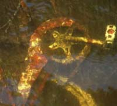
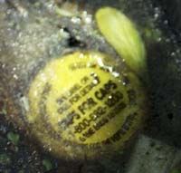
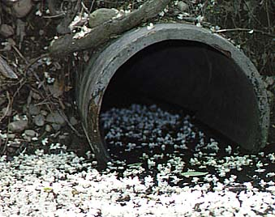
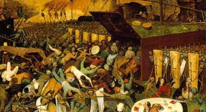
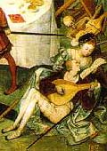
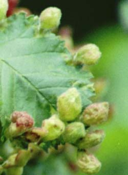
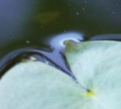

Saturday, June 05, 2004
Think Of The Children

It was late afternoon. By the river, low brilliant sun alternated with deep shade. She'd sought out a stand of strange, leggy, candle-flame shaped plants, hoping the green-white, bulging seed pods had opened to offer more taxonomic clues. What were these strange beings ? She realized that the stalks and pods had sprung from a low, prostrate wetland grass that had remained green all winter. Perhaps that was a clue.
She'd seen goslings, and two rabbits; milkweed was coming up in dense stands, and white and purple asters were beginning to bloom. Tall grass seedheads were opening everywhere -- brome, bluegrass, orchardgrass -- the seeds erupting with miniscule filaments and lacy fronds, green, purple, all waving in the light and wind.
Suddenly she noticed a group of three or four boys headed toward her on bicycles. They were maybe 11 or 12 years old, crewcut, boisterous. She moved aside to let them pass. As they passed they addressed her, loudly and hilariously:
Fucking freak !
Get a haircut, bitch !
She reeled into the pathside meadow as if slapped. Hot tears rose in her eyes. The boys whizzed away and their gales of laughter receded.
The wind whipped her hair -- longish, and quite gray -- across her cheeks. Her hollow, sunken cheeks. She felt diminished, pathetic. Old. Ugly. A death's-head horror. A freak. All the taunts of childhood bullies flooded back in chorus, an inchoate rush of cruel sound. Her chest -- her heart -- constricted. Civilization receded. She was naked, flayed, utterly vulnerable. She was surrounded by a crowd of youths, boys and girls, taunting, appetitive, aggressive, in full sexual display. She withered in their fierce, relentless, judgmental gaze.
Freak. Bitch. they hissed.
She peered at a clump of tiny white flowers at her feet. Ten petals. What the field guide calls inconspicuous flowers.
She'd always considered herself inconspicuous. Even invisible.
But now, in the harsh, transmogrifying spotlight of the strangers' gaze, she stood revealed.
A monster.
The Tunnel Of Love And Death
Drawn by overhanging branches and deep shade, I sidestepped down a pebbly incline to the dirty little inlet of the river that lies behind the old railroad trestle. An overturned shopping cart, there for as long as I can recall, rusted quietly in muck at the shoreline. Fresh, low greenery was quickly overtaking the upslope to the path, and wild iris and arrowheads were rising from the mudflats.
It was quiet, and beautiful. Even the half buried and half submerged trash seemed mythic artifacts, variations of Eliot's "garlic and sapphires in the mud/clot the bedded axle tree."



White petals were drifting downward through the air, and lay scattered underfoot, and when I looked back toward the path, I saw this:

The hundreds of blossoms floating in the dark water toward the black mouth of the culvert seemed like souls heading into the underworld. I suppose, it strikes me now, that I could have as easily been reminded of a tunnel of love. These were blossoms, after all, and it's springtime, the season when Persephone ascends from the underworld into the light.
But it doesn't feel like a moral springtime. All day yesterday the image of George Bush standing beside Pope John Paul made me physically ill. As much I despair at the Pope's historically unprogressive teachings on gender, I admire his promotion of peace and social justice. The images of George and Laura smarmily condescending to a religious thinker of John Paul's stature were truly nauseating. Bush's transparent attempt to appropriate the Pope's moral authority and attach it to his own grimy little elective war was as embarrassing as it was offensive.
Gazing at the blossons drifting into the culvert, I thought of Breughel's "Triumph of Death." In the painting, an army of the dead, ghoulishly rioting, is driving a crowd of the living into a tunnel

as, in the lower right corner, a prince and a courtesan make music and love.

The painting presents a grisly panorama ofdeath and mayhem. I wrote an ekphrastic poem about it in 1989.
II.
In the corner of Brueghel's Triumph of Death
a lutanist sings between the silk-draped knees
of a singing courtesan. Together they could represent
the triumph of Art and Love in the time of plague.
But the triumph is clearly Death's:
the landscape seethes in a thick impasto
of gore and smoke, fire and rot,
under the biliary yellow of a fin-du-temps sky.
Death has spilled the backgammon,
the ice bucket, the blackjack game:
the courtesan alone ignores the ghastly scene
that forms the backdrop of this spoiled feast --
the Totentanz of the armies of the Dead.
They drive the living into a wooden tunnel like a coffin,
and on each side of it there are more of them, a countless
mass of the Dead, gathered behind their coffin-lid shields.
From foreground to horizon they riot and scourge,
mock and burn , showing mercy to no one
between the bloody sand and the tilting Catherine wheels --
not to king, priest, mother, peasant, babe or fool.
Within the green rampart of her skirt he sings;
his gaze pleads, hers falls , coy, onto the cool page;
she is shy of both her suitors: of him,
and of the grinning one behind her,
who saws away at his viole da braccio
as she sings her division upon two grounds:
love's and death's.
Each August 6th, in Hiroshima, thousands of paper lanterns are launched on the Motoyasu River to commemorate the A-bomb dead -- paper, flame and water, in beautiful, elemental equilibrium. The antithesis of the terrible, smelting conflagrations of the bombs.
Blossoms drifting toward a culvert's mouth.
Monday, May 31, 2004
Earthly Delights 2
Mustard

Japanese Knotweed
Shepherd's Purse
Bittersweet Nightshade
Sunday, May 30, 2004
And Heartburn.

Gall
Green nubs along the saw-toothed leaf-edge seemed
like buds, like leaf from leaf begotten, pure
as parthenogenetics. But she knew
that nature doesn’t improvise. It sticks
to code as if it were a covenant
sap-signed and sealed. This was disease. Squatters
invaded, liked the digs and set up house,
happy as spirits in a pig. The gall.
5.30.04
Transcendental Etude VI

In her spotty and remote religious education there hadn't been a big emphasis on glossolalia. No one ever had, to her recollection, risen from the pews of Andover's West Parish Church and spoken in tongues. It would have been, at the very least, unseemly. In fact, a few years ago, she'd had to look up "Pentecost," completely unclear on its origins and significance. She'd been amused by Peter's rejoinder to the skeptics: They can't be drunk. It's nine o'clock in the morning ! And she'd liked the image of how people of all the disparate languages could understand what was being said -- as if the sign had been short-circuited and pure significance were pouring through, the antithesis of Babel.
She herself was tongue-tied. A quiet child. "Paula should," read all her report cards, "participate more in class." She hated the sound of her voice. Hated social gatherings, and the need to engage in small talk. Maybe that's what attracted her to Merton and the Carthusians -- all that blessed silence.
She'd seen a video of young people speaking in tongues. It had made her vaguely queasy. Like faith healing. Holy swoons. Revivals. Snake handlers.
In her imagination, a blank-eyed face looms: Have YOU accepted CHRIST as your personal savior ?
She sat in her car outside the gray stone church. Main Street, this long holiday weekend, was practically deserted. One block down the slightly dilapidated steeple of the Congregational Church dominated the ecclesiastic skyline of upper Main Street. It was, for the first time in weeks, a beautiful Sunday morning, cloudless, breezy, delightfully cool. She watched as a woman ducked into a basement entrance of a nearby office building. A small sign read Boston Meditation Group. Sunday Morning, indeed.
She took what was becoming her accustomed place in the sparsely populated pews -- right side, back, behind the dark pillar that announced the hymns. At the doorway, the combination of candlesmoke and organ music had given her a little Proustian frisson. A la recherce du Church perdu, indeed. How could she have lost something she'd never truly possessed ? True, she'd been baptized. She even remembered it. She was eight, her brother a toddler. They'd given her a Bible. It was inscribed: June 12, 1960. She still had it. The binding was a little worn, and, in college, she'd scribbled notes throughout Job (she'd written a paper) and doodled an unfortunate bespectacled and berobed preacher at the end of Ecclesiastes, saying "Man is but a vain beast. Vanity of Vanities. Oh my." He was, her label announced, "Koheleth, president of the Alexandria Anti-vivisection league." What was that all about ?
The organist -- she learned later he was a last minute ringer for someone sick -- fumbled his was through the prelude as she arranged her texts -- BCP, hymnal, bulletin -- and tried to compose herself. She felt uneasy. An intruder. An interloper. Conspicuous. Full of bad faith. A poseur. A fake. An imposter. Inauthentic. But she was trying. Sincerely. She'd gotten a book. The Anglican Vision. She'd learned about Vera Scudder, a Wellesley English professor, marxist, social activist, lesbian, devout and contemplative Anglican. An Episcopal Dorothy Day.
"This is impossible," she thought, squirming on the hard pew. "What am I doing here ?"
Sooner or later, she knew, she was going to have to deal with Jesus. She pictured him plopping down on the pew next to her, wearing an "I (Heart) Jesus" billed cap. Grinning at her. Jesus Christ, gadfly.
But for today it was the apostles. And the Holy Spirit. The priest, a wonderful and fluent speaker, precise and clear, gave his sermon from the aisle. He looked impressive in his white beard, white robe and red, pentecostal stole. He talked about the Holy Spirit and oneness. That was fine, practically Buddhist. And then, about mission. Mission ? Was the "E" word about to be spoken again ?
"What am I doing here," she thought again. It was a sincere question.
She entered the queue to communion, still fretting. The tall, stately man with Parkinson's was in front of her again. Plus another man wearing oxygen. She thought about incarnation and affliction. And compassion. Feeling together. Suffering together. God and humans. Humans and Humans. "In" Christ. All part of the Logos.
Suddenly, a seeing eye dog -- a big, quiet, German shepherd in a leather harness -- trotted out of a pew and headed toward the altar. Looking for its master.
She smiled. Could this be a sign ? A sign from dog ?
Someone, something, to evangelize her out of her blindness ?
In her spotty and remote religious education there hadn't been a big emphasis on glossolalia. No one ever had, to her recollection, risen from the pews of Andover's West Parish Church and spoken in tongues. It would have been, at the very least, unseemly. In fact, a few years ago, she'd had to look up "Pentecost," completely unclear on its origins and significance. She'd been amused by Peter's rejoinder to the skeptics: They can't be drunk. It's nine o'clock in the morning ! And she'd liked the image of how people of all the disparate languages could understand what was being said -- as if the sign had been short-circuited and pure significance were pouring through, the antithesis of Babel.
She herself was tongue-tied. A quiet child. "Paula should," read all her report cards, "participate more in class." She hated the sound of her voice. Hated social gatherings, and the need to engage in small talk. Maybe that's what attracted her to Merton and the Carthusians -- all that blessed silence.
She'd seen a video of young people speaking in tongues. It had made her vaguely queasy. Like faith healing. Holy swoons. Revivals. Snake handlers.
In her imagination, a blank-eyed face looms: Have YOU accepted CHRIST as your personal savior ?
She sat in her car outside the gray stone church. Main Street, this long holiday weekend, was practically deserted. One block down the slightly dilapidated steeple of the Congregational Church dominated the ecclesiastic skyline of upper Main Street. It was, for the first time in weeks, a beautiful Sunday morning, cloudless, breezy, delightfully cool. She watched as a woman ducked into a basement entrance of a nearby office building. A small sign read Boston Meditation Group. Sunday Morning, indeed.
She took what was becoming her accustomed place in the sparsely populated pews -- right side, back, behind the dark pillar that announced the hymns. At the doorway, the combination of candlesmoke and organ music had given her a little Proustian frisson. A la recherce du Church perdu, indeed. How could she have lost something she'd never truly possessed ? True, she'd been baptized. She even remembered it. She was eight, her brother a toddler. They'd given her a Bible. It was inscribed: June 12, 1960. She still had it. The binding was a little worn, and, in college, she'd scribbled notes throughout Job (she'd written a paper) and doodled an unfortunate bespectacled and berobed preacher at the end of Ecclesiastes, saying "Man is but a vain beast. Vanity of Vanities. Oh my." He was, her label announced, "Koheleth, president of the Alexandria Anti-vivisection league." What was that all about ?
The organist -- she learned later he was a last minute ringer for someone sick -- fumbled his was through the prelude as she arranged her texts -- BCP, hymnal, bulletin -- and tried to compose herself. She felt uneasy. An intruder. An interloper. Conspicuous. Full of bad faith. A poseur. A fake. An imposter. Inauthentic. But she was trying. Sincerely. She'd gotten a book. The Anglican Vision. She'd learned about Vera Scudder, a Wellesley English professor, marxist, social activist, lesbian, devout and contemplative Anglican. An Episcopal Dorothy Day.
"This is impossible," she thought, squirming on the hard pew. "What am I doing here ?"
Sooner or later, she knew, she was going to have to deal with Jesus. She pictured him plopping down on the pew next to her, wearing an "I (Heart) Jesus" billed cap. Grinning at her. Jesus Christ, gadfly.
But for today it was the apostles. And the Holy Spirit. The priest, a wonderful and fluent speaker, precise and clear, gave his sermon from the aisle. He looked impressive in his white beard, white robe and red, pentecostal stole. He talked about the Holy Spirit and oneness. That was fine, practically Buddhist. And then, about mission. Mission ? Was the "E" word about to be spoken again ?
"What am I doing here," she thought again. It was a sincere question.
She entered the queue to communion, still fretting. The tall, stately man with Parkinson's was in front of her again. Plus another man wearing oxygen. She thought about incarnation and affliction. And compassion. Feeling together. Suffering together. God and humans. Humans and Humans. "In" Christ. All part of the Logos.
Suddenly, a seeing eye dog -- a big, quiet, German shepherd in a leather harness -- trotted out of a pew and headed toward the altar. Looking for its master.
She smiled. Could this be a sign ? A sign from dog ?
Someone, something, to evangelize her out of her blindness ?


{kind=link}